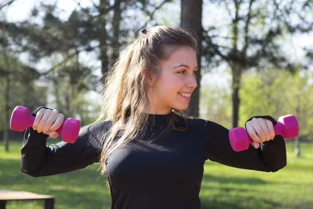

6 exercícios para definir o abdômen em casa
Para definir o abdômen é importante fazer exercícios aeróbicos, como a corrida, e que fortalecem a região abdominal, além de ter uma alimentação rica em fibras e proteínas, beber pelo menos 1,5 L de água. Além disso, evitar o estresse, fazer uma massagem no abdômen e adotar uma postura correta também é importante para ficar com a barriga firme.
Normalmente, a barriga definida surge quando se elimina a gordura acumulada no abdômen e se tonifica seus músculos e para manter os resultados, é importante continuar realizando atividade física regularmente e seguindo o plano alimentar de acordo com a orientação do nutricionista.
Exercícios para definir o abdômen em casa
Para conseguir definir o abdômen deve-se fazer exercícios que fortalecem o CORE, para que os abdominais possam ficar mais evidentes, e além disso reduzir ao mínimo a quantidade de gordura dessa região porque os músculos abdominais são um grupo muscular pequeno e só fica definido numa barriga sem gordura. Alguns exercícios que podem ser realizados para definir o abdômen em casa são:
1. Abdominal em V

Para fazer esse abdominal, a pessoa deve deitar com a barriga para cima e levantar um pouco as pernas e o tronco, colocando os braços para frente, realizando esses dois movimentos ao mesmo tempo. É recomendado realizar 3 séries de 8 repetições, ou de acordo com a indicação do instrutor, contraindo bem a musculatura abdominal e com cuidado para não forçar o pescoço.
2. Abdominal com perna elevada

Nesse abdominal, a pessoa deve deitar no chão de barriga para cima, levantar as pernas esticadas ou semi flexionadas e o tronco, mantendo os braços para frente. Esse exercício é feito em isometria, ou seja, a pessoa deve permanecer na mesma posição por cerca de 15 a 30 segundos ou de acordo com indicação do instrutor, mantendo o abdômen contraído durante todo o tempo.
3. Abdominal cruzado

Para fazer esse abdominal, também conhecido como abdominal bicicleta, a pessoa deve se posicionar como se fosse fazer um abdominal normal, colocar as mãos atrás da nuca, tirar os ombros do chão, manter o abdômen contraído e fazer movimento para o cotovelo direito encostar no joelho esquerdo, alternando o movimento com o cotovelo esquerdo em direção ao joelho direito. É importante que o abdômen permaneça contraído durante todo o exercício.
4. Abdominal com elevação do quadril na bola

O abdominal com elevação do quadril na bola também é um ótimo exercício, sendo necessário para isso deitar no chão, de barriga para cima, colocar a planta dos pés na boal de pilates e elevar o quadril, fazendo esse movimento lentamente de acordo com a recomendação do instrutor.
5. Prancha com bola

Neste exercício, deve-se colocar os pés na bola e apoiar os braços no chão, como se fosse fazer a prancha. Em seguida, deve-se dobrar os joelhos, puxando a bola para frente, sem movimentar os braços. Esse exercício é interessante para definir o abdômen porque precisa que os músculos abdominais estejam bastante contraídos para que o corpo fique estabilizado na posição e o movimento possa ser realizado corretamente.
6. Prancha com 2 apoios
Para realizar esse exercício, é fundamental que os músculos abdominais estejam ativados para que se possa ter equilíbrio. Inicialmente, a pessoa deve ficar na posição de prancha e depois tirar do chão braço e pernas opostas, ou seja, levantar braço direito e perna esquerda, por exemplo, ficando apenas com dois apoios. É indicado ficar nessa posição o máximo de tempo que conseguir ou de acordo com a recomendação do instrutor.
O que comer
A alimentação é importante para manter a saúde e ajudar a definir o abdômen, sendo importante que seja indicado pelo nutricionista para que o plano nutricional seja montado de acordo com as características da pessoa e objetivos. É recomendado que seja feita uma alimentação equilibrada e variada e que ajude a queimar gordura e acelerar o metabolismo, sendo indicado para isso:
- Fazer pelo menos 5 refeições por dia, não passando mais de 3 horas sem comer;
- Beber pelo menos 1,5 L de água, chá verde ou alcachofra;
- Comer legumes ou fruta em todas as refeições do dia;
- Fazer uma dieta rica em fibras, comendo linhaça, aveia e alimentos integrais;
- Ingerir alimentos antioxidantes como tomate, laranja ou castanha do Pará;
- Comer alimentos que acelerem o metabolismo como gengibre ou canela, por exemplo;
- Comer proteínas em todas as refeições, como ovos, leite, carne e peixe;
- Evitar o consumo de alimentos gordurosos, açucarados ou processados, como bolachas, comidas congeladas ou enlatados.
Estes alimentos ajudam a diminuir a chance de retenção de líquidos e contribuem para o bom funcionamento do intestino, diminuindo a prisão de ventre e o inchaço e levando a que se note a barriga tonificada.
Além disso, para que o abdômen fique em forma mais rapidamente, ganhando massa muscular, pode-se tomar suplementos proteicos, no entanto é preciso que seja recomendado pelo nutricionista, pois é necessário verificar qual a necessidade proteica e as características da pessoa, sendo possível indicar o mais adequado. Conheça alguns suplementos para ganhar massa muscular.
Dicas para definir os abdominais
Algumas ótimas dicas para definir o abdômen são seguir uma dieta hipocalórica orientada por um nutricionista, além de praticar exercícios aeróbicos, como a corrida, para aumentar o gasto calórico e promover a queima de gordura da barriga. Mas para ficar com uma barriga "tanquinho" é essencial fazer exercícios abdominais de diversas formas, várias vezes por semana e também comer alimentos ricos em proteínas porque isto favorece a hipertrofia muscular.
Além disso, as artes marciais também são uma excelente opção para quem quer definir o abdômen, modelar o corpo e aumentar a resistência e força física. Conheça mais sobre as artes marciais.
Adotar uma boa postura também é muito importante para ficar sem barriga porque, quando a coluna, o quadril e os ombros estão bem alinhados, os músculos abdominais são mais capazes de manter os órgãos devidamente posicionados e não anteriorizados como acontece quando há má postura.